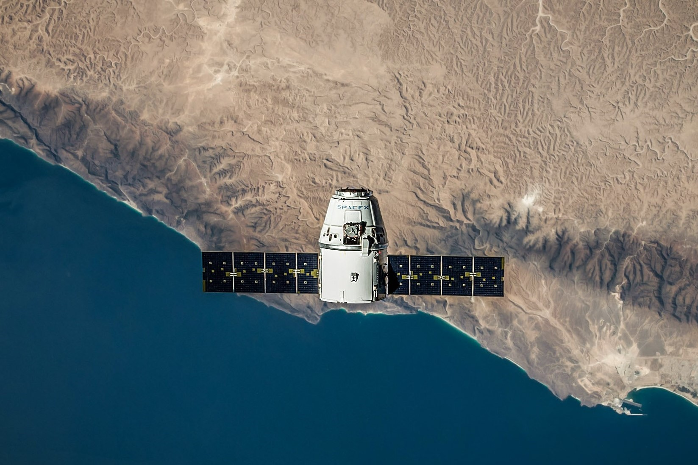
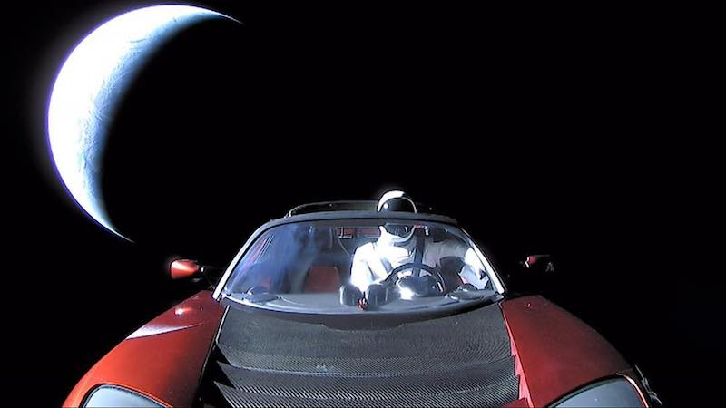

da startup a colosso dell' esplorazione spaziale
Dopo PayPal, torna alle sue fantasie di bambino di esploratore dello Spazio.
Nella biografia su Elon Musk di Ashley Vance si racconta di un incontro che si tiene all’Hard Rock Cafe tra Musk e alcuni dei suoi più cari amici.
«Eravamo tutti al pub a parlare, mentre Elon se ne stava in disparte a leggere un oscuro manuale sui razzi sovietici che aveva comprato su eBay», racconta Kevin Hartz, uno dei primi investitori di PayPal.
da razzi russi a startup rivoluzionarie

L'idea principale di Musk è di portare delle piante e farle crescere sul Pianeta Rosso.
Anche se troppo futuristica, l’ipotesi è affascinante.
Musk vuole trovare un modo per riprendere la crescita delle piante e inviare video sulla Terra.
Ma ci vogliono dei razzi per trasportare tutto.
Per provare ad acquistarli, incontra Jim Cantrell, una ex spia che ha lavorato per diverse agenzie governative e conosce bene il mondo militare russo.
Il viaggio in Russia per acquistarli non va come ha programmato.
I russi vogliono otto milioni di dollari per ogni razzo e Musk non è disposto a spendere quella cifra.
Nel viaggio di ritorno gli viene l'idea di costruirseli da solo.
PRIMI LANCI E PRIMI FALLIMENTI
Nel marzo 2006 SpaceX ha lanciato il suo primo Falcon 1, che è iniziato con successo ma è terminato prematuramente a causa di una perdita di carburante e di un incendio.
A questo punto, tuttavia, la società aveva già guadagnato milioni di dollari nel lancio di ordini, molti dei quali dal governo degli Stati Uniti.
I lanci del Falcon 1 che non sono riusciti a raggiungere l'orbita terrestre sono seguiti nel marzo 2007 e nell'agosto 2008, ma nel settembre 2008 SpaceX è diventata la prima azienda privata a inviare in orbita un razzo a propellente liquido.
Tre mesi dopo ha vinto un contratto NASA per la manutenzione della ISS che valeva più di 1 miliardo di dollari.

dal 2010 la produzione aumenta

Nel 2010 SpaceX ha lanciato per la prima volta il suo Falcon 9 , un'imbarcazione più grande così chiamata per il suo uso di nove motori, e l'anno successivo ha aperto il terreno su un sito di lancio per ilFalcon Heavy , un velivolo che la compagnia sperava sarebbe stato il primo a rompere la barriera del costo di $ 1.000 per libbra in orbita e che un giorno potrebbe essere utilizzato per trasportare gli astronauti nello spazio profondo.
Nel dicembre 2010 l'azienda ha raggiunto un altro traguardo, diventando la prima azienda commerciale a rilasciare un veicolo spaziale(the dragon capsule), in orbita e riportala con successo sulla Terra.
Dragon ha fatto nuovamente la storia il 25 maggio 2012, quando è diventato il primo veicolo spaziale commerciale ad attraccare con la ISS, alla quale ha consegnato con successo il carico.

Nell'agosto dello stesso anno, SpaceX annunciò di aver vinto un contratto dalla NASA per sviluppare un successore dello space shuttle che avrebbe trasportato gli astronauti nello spazio.
viaggio di ritorno gli viene l'idea di costruirseli da solo.
falcon heavy

Il Falcon 9 è stato progettato in modo che il suo primo stadio potesse essere riutilizzato.
Nel 2015 un primo stadio Falcon 9 è tornato con successo sulla Terra vicino al suo sito di lancio.
A partire dal 2016, SpaceX ha anche iniziato a utilizzare navi drone per gli atterraggi sui razzi.
Uno stadio del razzo che era tornato sulla Terra è stato riutilizzato con successo in un lancio del 2017.
Nello stesso anno, una capsula del drago è stata riutilizzata su un volo per la ISS.
Il razzo Falcon Heavy ha effettuato il suo primo volo di prova nel 2018.

Due dei primi tre stadi sono atterrati con successo; il terzo ha colpito l'acqua vicino alla nave drone.
Quel Falcon Heavy non trasportava un satellite ma invece mise in orbita attorno al Sole un Tesla Roadster con un manichino in tuta spaziale allacciato al posto di guida.
space x da inizio alla nuova era dell'esplorazione spaziale
Il primo volo con equipaggio di una capsula del drago verso la ISS è stato lanciato il 30 maggio 2020, con gli astronauti Doug Hurley e Robert Behnken.
SpaceX ha anche annunciato il successore del Falcon 9 e del Falcon Heavy: ilSistema Super Heavy – Starship (originariamente chiamato BFR [Big Falcon Rocket]).
Il primo stadio Super Heavy sarebbe in grado di sollevare 100.000 kg (220.000 libbre) nell'orbita terrestre bassa.
Il carico utile sarebbe la Starship, una navicella spaziale progettata per diversi scopi, tra cui fornire un trasporto veloce tra le città sulla Terra e costruire basi sulla Luna e su Marte.
SpaceX prevedeva di utilizzare l'astronave per un volo attorno alla Luna trasportando l'uomo d'affari giapponese Maezawa Yusaku e diversi artisti nel 2023 e di lanciare coloni su Marte a metà degli anni '20.
di A. Comai